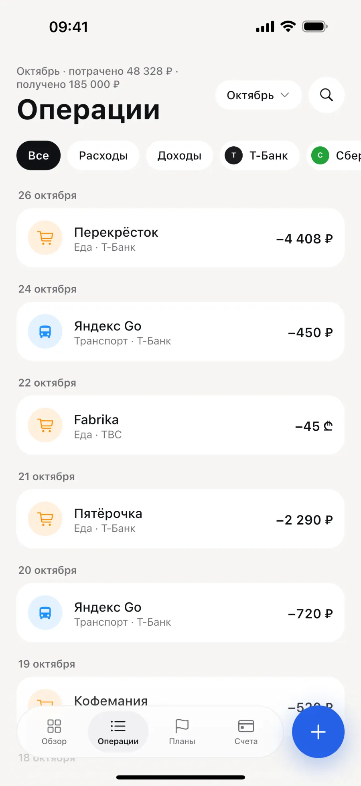
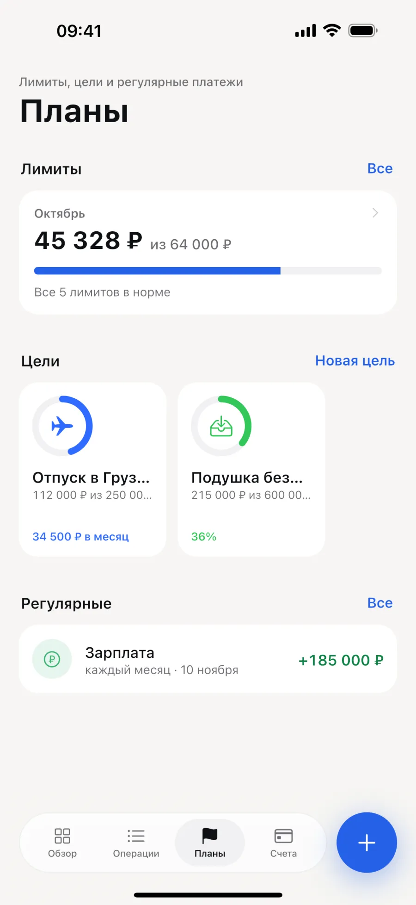
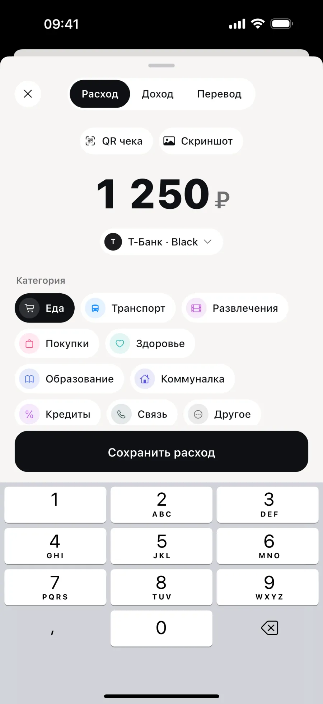
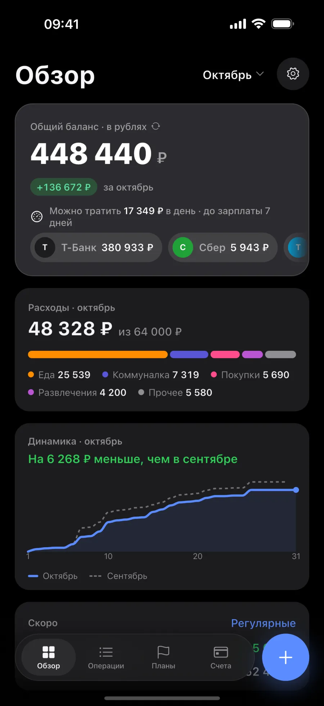

Каждый счёт в своей валюте, итог — в вашей
Счета сгруппированы по странам. Лари остаются лари, а общая сумма пересчитывается по курсу, который обновляется раз в сутки. Рубли, лари, доллары и евро.
Numi собирает счета из банков России и Грузии в одну сумму и считает, сколько можно тратить в день до зарплаты. Без регистрации, все данные хранятся на iPhone.
Скоро в App StoreБесплатно, для iPhone
Счета сгруппированы по странам. Лари остаются лари, а общая сумма пересчитывается по курсу, который обновляется раз в сутки. Рубли, лари, доллары и евро.
Подключите банк — операции и балансы будут обновляться в фоне. Вход идёт на сайте банка, пароль Numi не сохраняет. Для остальных банков загрузите выписку, а покупку за наличные добавьте по QR-коду чека.

Numi делит остаток до зарплаты на дни с учётом регулярных платежей. Лимиты по категориям предупредят о перерасходе, цели покажут, сколько откладывать в месяц.

У Numi нет своего сервера и аккаунтов. Мы не видим ваши счета и операции.
Счета, операции, лимиты и цели хранятся в базе на устройстве. Регистрация не нужна.
Резервная копия шифруется паролем, который знаете только вы.
Реклама неперсонализированная. Суммы и названия счетов в аналитику не попадают.
Стирает базу, настройки, ключи и сеансы банков.
Подробно — в политике конфиденциальности
Светлая и тёмная тема, как в системе


Бесплатно. В приложении один небольшой баннер над панелью вкладок.
Сейчас Т-Банк и Сбер, в тестовом режиме. Для остальных банков загрузите выписку файлом: CSV, Excel, OFX или 1С.
Рубли, грузинские лари, доллары и евро. Общий баланс считается по курсу, который обновляется раз в сутки.
Сделайте зашифрованную резервную копию в «Настройки → Резервная копия» и восстановите её на новом iPhone. Без копии перенести данные нельзя: у нас их нет.
Пока только iPhone.
Бесплатное приложение для iPhone. Пока ждём релиза, вопросы и предложения можно оставить на странице поддержки.